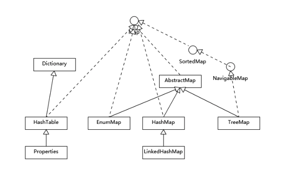

引言
上一节我们详细分析的集合，由于集合篇幅较长，我们吧Map单独拎出来分析下吧。也是由于从严格意义上说Map不能看出集合，但它又和集合有着很多联系，感觉有必要着重讲下。
红黑树
讲HashMap之前我们先大致了解下红黑树。
什么是红黑树?
简答来说其就二叉树的一种形式，不过其比二叉树更智能。它能左右平衡节点的数量，尽量保证树的高度差不多，所以红黑树的特点：
- 节点只能是红色或黑色；
- 相邻的2个节点的颜色不能相同；
- 红色节点不能连续；
- 根节点、叶子节点都是黑色；
- 从任意节点到达其每一个叶子节点所有的路径经过的节点都是一样的；
- 时间算法复杂度
log(n)；
Java1.8中的HashMap就是引入了红黑树的实现。
1 | /* ------------------------------------------------------------ */ |
具体红黑树的更多学习，简单的请参考下：30分钟搞懂红黑树（图解） .
HashMap
HashMap应该是我们在实际工作中使用最多的键值存储形式了。了解HashMap之前我们先了解下HashTable
1 | JDK1.0 |
从源码我们可以看出Hashtable是在早期Java提供的哈希表的一种实现。Dictionary抽象类定义了HashTable的一些基本操作，如：增，删，取等；加上HashTable本身是同步、线程安全的，而且其键和值不支持null，所以，我们开发时候选用的时候要注意。
思考：为何HashTable的键和值都不能为null？
1 | /** |
而从Java1.2 之后设计的HashMap就是为了针对HashTable而改进的（也不能叫改进，各有场景吧）。
HashMap进行put和get操作，其算法复杂度是o(1)，还记得之前集合的复杂度吗？
再扩展讲下
TreeMap，它是基于红黑树来实现的可以顺序访问的Map，其和HashMap不同，其get和put的时间复杂度是O(logn)。
我们常常使用Map大多情况下都是使用增、删、取，都顺序是没有额外的要求的，这种情况HashMap是很好的选择，之前说了HashMap是哈希表的一种实现，所以其性能非常依赖哈希码的有效性，所以，又回到我们Java基础，掌握equals和hashCode;
- equal如果相等，hashcode一定要相等；
- hashcode如果需要重写， 则equal也要重写；
- equal要符合通用性（对称、传递、自反、一致）；
LinkedHashMap
LinkedHashMap和我们上一节学习的LinkedList差不多，都是一个双向链表，其遍历顺序和插入顺序是一样的。

我们可以看出LinkedHashMap继承HashMap，那它相对HashMap使用场景有什么特别呢？
1 | /** |
这个方法上面的注释，详细说明了其应用场景：如果我们想要构造一个内存空间比较敏感资源池(类似线程池或redis的删除策略)，我们希望当资源池满了之后把最不常用或最先入池的数据删除，永远保证特定大小的资源池；
举例：我们想设计一个实时统计最近前100(n)名登陆的会员；如果我们用LinkedHashMap咋实现；
1 | package cn.neilli.corejava.list; |
上述运行结果：
1 | id: 1, User{id=1, username='neil'} |
改变top5.put()顺序，其输出也是会相应改变。
再讲HashMap
为何要在这里再讲下HashMap呢？ 上面LinkedHashMap常见的例子中，我们假定是缓存Top100的当前会员，那我们在创建LinkedHashMap容器时能不能开始就确定你大小呢，前面章节中我们得知，动态数组的扩容是需要内存和性能的消耗的，那Map也一样。
LinkedHashMap是继承自HashMap的，所以我们要分析下HashMap的源码，看下它们的容量是怎么玩的。
容量和负载因子？
1 | /** |
通过上面的核心源码，我们明白了，如果像上面在new LinkedHashMap()时，其负载因子和容量都是默认值（0.75f、16）；
那上面的例子我们应该怎么设置负载因子和容量呢？
假如我们的预估数量是100，负载因子是0.75f。
下面源码是put()操作：
1 | /** |
如果size > threshold，就会触发扩容(resize())，扩容到threshol的2倍；
那我们知道该如何设置容量了吧？
上面的例子，假如负载因子是0.75f，你的目标容量是100，那其应该是100/0.75 = 134，如果你设置new HashMap(134)，tableSizeFor会给你转成：256，那会有很多剩余，也会造成空间浪费和性能问题；
知识扩展
综上，我们可以分析得出HashMap内部可以看成一个数组和链表结合的符合结构，数据被分成一个一个的桶，哈希值决定了键值对在数组的位置，所以，理想情况下其操作复杂度是O(1); 但是，哈希值相同的键值对，则会以链表的形式来存储，当链表超过TREEIFY_THRESHOLD时，其又会变成树形结构，这样其复杂度就会被树化；
鉴于HashMap有这么一个’弱点’，那就可能被黑客利用DOS攻击，参考：哈希碰撞攻击与防范机制